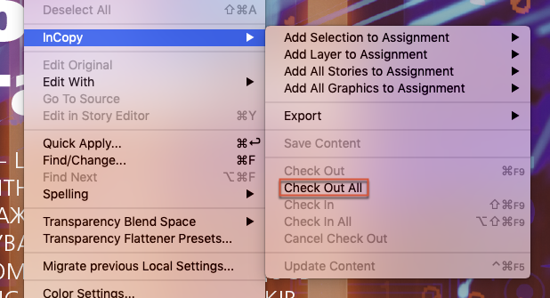
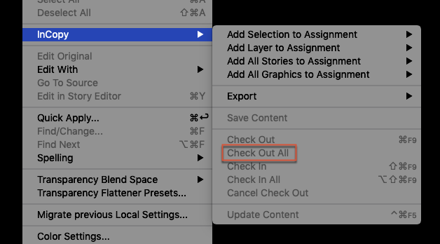
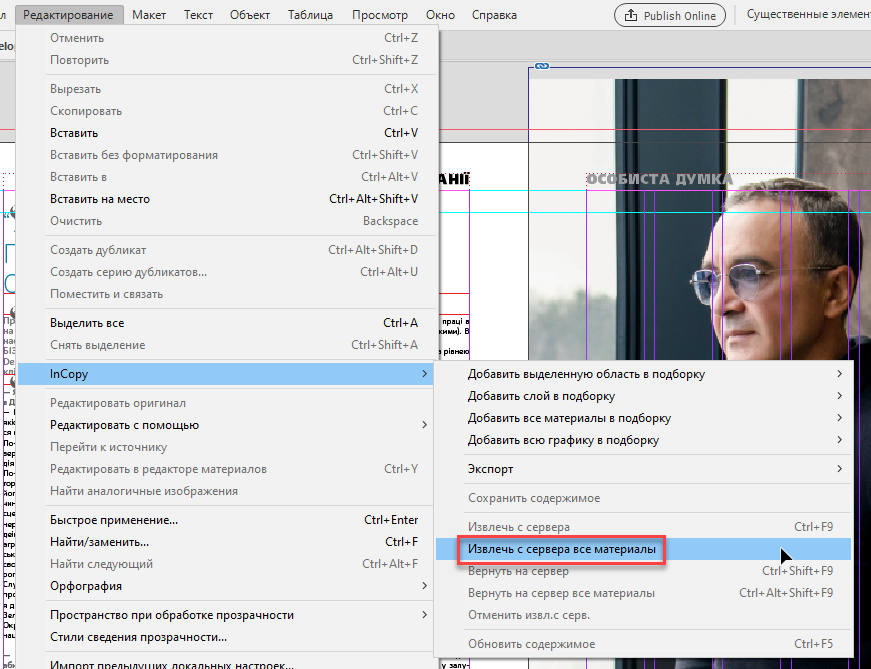

Check out all stories
Script for InDesign. Written and tested in InDesign 2020 by Kasyan
As the name suggests, it checks out all InCopy stories. Sometimes I have to replace fonts in several documents using the ‘Find Font’ feature. Since we use InCopy for proofreading and editing text, I can’t do it until I check out the stories. For some reason, InDesign silently ignores the ‘Change All’ command: makes no changes and gives no warning. Without the script I had to find text frames containing the font one-by-one, check out them and make a replacement. The text frames are often hidden from the view – located on master pages or the pasteboard – so it takes a while to look for them.
InDesign has the ‘Check In All’ feature but has no ‘Check Out All’ one which I would like to have so I added it on my own.
The script comes in two variants:
- Check out all stories.jsx – is a regular script
- Add Check out all stories menu.jsx – is a startup script that creates the ‘Check Out All’ menu following the Edit > InCopy > Check Out command. (However, so far, it will work only in the English version of InDesign.)

Note: if no document is open in InDesign, the menu is disabled.

Click here to download English version of the script.
If you found this script useful and want me to make more free scripts, consider supporting me by donating. To donate, please press the button below. This is Paypal's payment system.
Also, here is the Russian version.
